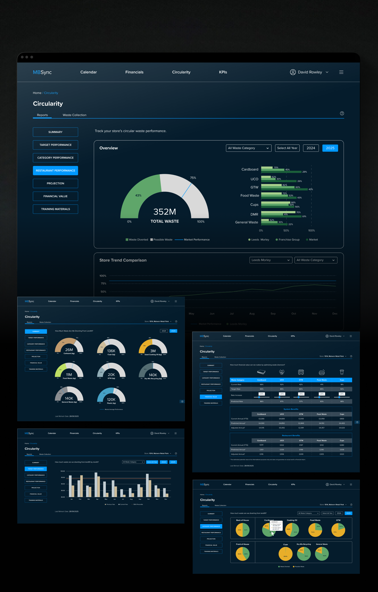
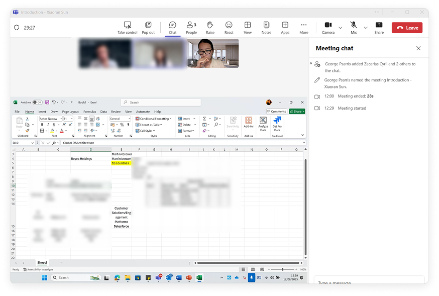
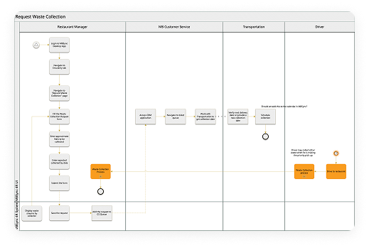
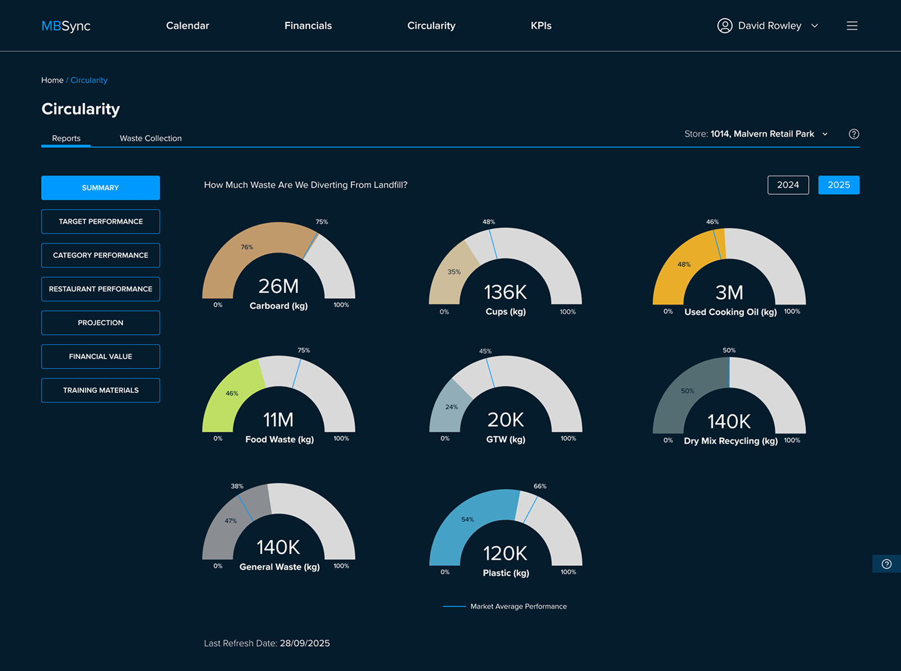
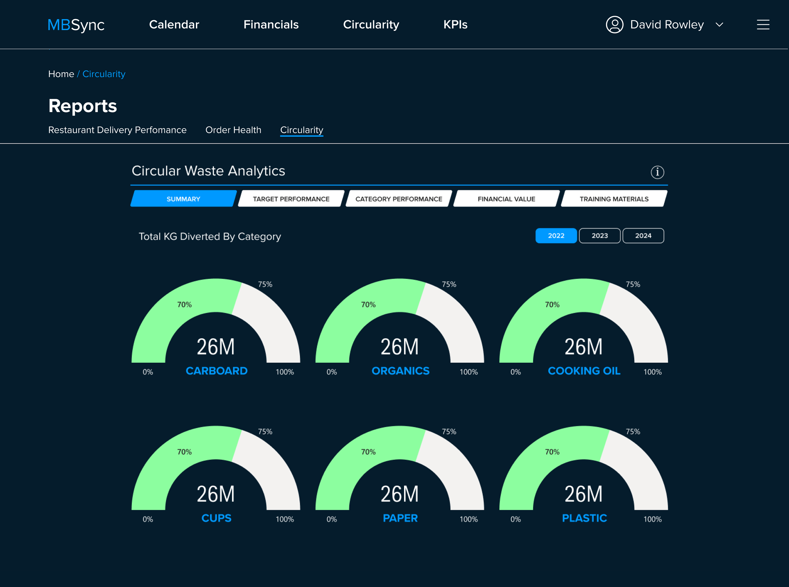

Building greenfield B2B platformfrom assumption to launch.

Circularity is a B2B waste management platform built for Martin Brower, one of the world's largest supply chain companies serving restaurant brands like McDonald's.
The product was built in response to new UK waste regulations. Nobody in the market had a clear reference point, not even the stakeholders.
The product was built on Salesforce. This means the technical capabilities were already decided. My job wasn't to design and hand off to engineers to build from scratch.
My job was: given what Salesforce can serve, how do I design an interface that actually helps users make decisions, without over-serving data or under-serving context?
How I started
without a brief, without a handover.
Product briefs, regulatory background, early stage Figma frames.
Understanding what existed before forming any opinion.
One-on-one meetings with the PM and key stakeholders.
Not to gather requirements, to understand priorities, constraints, and what "good" meant to each person.
Existing Figma frames told me where the project stood.
What had been decided, what was still open, and where the first real design decisions needed to happen.

In a greenfield project with no market reference, the most dangerous move is to assume I understand the direction and start executing. I needed to know three things first: what problem the product was solving, where the technical boundaries were (Salesforce constraints), and what each stakeholder's priorities actually were. None of that lives in a document alone.

Within the first 2 weeks, I had built enough of a judgment foundation to identify where to start, the highest-traffic page, the main dashboard, and began moving the project forward without being guided.
Design as a tool
for alignment.
Multiple stakeholders had different views on product direction — but no shared language to discuss priorities. Rather than scheduling more meetings, I used rapid mockups as artifacts to make decisions concrete and visible.


When technical constraints are already set by Salesforce, debating features in the abstract is inefficient. A concrete mockup surfaces real concerns faster than any meeting. Each removal wasn't an opinion — it was driven by evidence that emerged only when stakeholders had something tangible to react to.
Three features removed before a single line of unnecessary code was written. Design wasn't just delivery — it was how we discovered what the product actually needed to be.
Judgment after
user testing.
After usability testing, I compiled all findings into two categories — issues users explicitly raised, and new insights based on my own design judgment. Together with the PM, we filtered these into a report for senior leadership, who made the final call on what would be actioned.
Issues users explicitly raised during testing sessions.
New insights identified through my own design lens — beyond what users articulated.
Synthesised both inputs into a prioritised recommendation for senior leadership — framed clearly enough to survive two more rounds of review, and advocate for what actually mattered.


Accessibility
"I need my reading glasses."
— A restaurant manager in his mid-forties, during user testing
We had been designing on large monitors in an office. But our real users were middle-aged managers working in busy environment, on older devices with lower screen quality. Using Figma's accessibility plugin, I ran a full audit across the entire product — reviewing font sizes, font weights, and colour contrast ratios.
Shipped at near-zero engineering cost · Full product audit completed
Ranking motivation
"It's not about being number one — it's about not being the worst."
— Restaurant manager, user testing session
The feature didn't get built due to Salesforce constraints, but the proposal directly influenced the product roadmap discussion.
Not built · Salesforce constraints · Influenced product roadmap
Market average benchmark
The Summary page showed recycling data through multiple donut charts. But data alone doesn't drive behaviour — users had no reference point to judge whether their numbers were good or bad.
am I ahead or behind?
Shipped · Context transforms data into behaviour-driving insight
Responsive design as
a strategic decision.
Responsive design isn't about shrinking the web version — it's about rethinking what data matters most, and how to present it, for each context of use.
Project Takeaways
The platform launched to a pilot group of operators and received strong early feedback — particularly around the clarity of the dashboard and the reduction in steps required to log and report collections. Internal testing showed a measurable reduction in time-on-task for the most common workflows.
The design system established during this project became the foundation for future feature development, enabling the team to ship new capabilities with greater speed and consistency. The project reinforced the value of spending time upfront in discovery — the decisions made early in the process paid dividends throughout delivery.